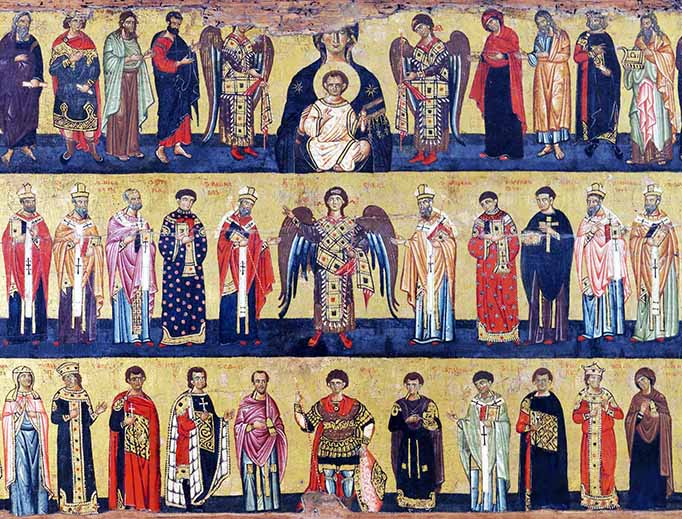

The Catholic faith celebrate saints who helped the Catholicism faith, they lived in execptional virtueus lives. they are held with high regard amongst the catholic community, they are not worshipped like Jesus but are prayed in order to request aid with tasks such as protection, education, and health
The Virgin Mary or among latino cultures known as our lady of Guadalupe are Marys most common titles
Mary is the birth giver of the prophet of Jesus Christ, She is one of the most influential religous figures in catholicism. she is hold as a figure who prays for others. Many Christians ask Mary to bring their needs to Jesus, much like asking a friend to pray for them.